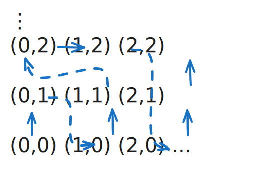

[来自周民强《实变函数论》、李文威《代数学方法》]
等势
我们知道, 有限集的元素个数可以用一个非负整数 `n` 表示,
基数就是对 "有限集的元素个数" 这个概念的扩充.
- 设 `X, Y sube Omega`. 如果存在 `X` 到 `Y` 的双射, 就称集合 `X` 与 `Y`
等势. 可以验证, 等势构成 `2^Omega` 上的等价关系.
用记号 `|X|` 或者 `"card" X` 表示等势的等价类.
- 若 `X` 与 `Y` 的一个子集等势, 换言之存在 `X` 到 `Y` 的单射, 则称 `|X| le |Y|`;
若 `|X| le |Y|` 且 `|X| != |Y|`, 则称 `|X| lt |Y|`.
关系 `le` 满足传递性. 下文将证明 `le` 的反对称性, 从而它构成偏序.
无限旅馆
`NN` 与 `NN uu {x}` 等势.
若 `x in NN` 则结论显然, 否则令
`f(y) := {
y + 1, if y in NN;
y, if y = x;
:}`
则 `f` 是 `NN uu {x}` 到 `NN` 的双射.
Banach 映射分解定理*
若 `f: X to Y`, `g: Y to X`, 则存在 `A sube X`,
`B sube Y`, 使得
`f(A) = B`, `quad g(overset ~ B) = overset ~ A`,
其中 `overset ~ A = X\\A`, `overset ~ B = Y\\B`.
- 对任意 `E sube X`, 记
`F = f(E)`, `quad Y\\F = overset ~ F`,
`quad g(overset ~ F) = overset ~ E`.
若 `E nn overset ~ E = O/`, 则称 `E` 为 `X` 中的分离集.
显然, `O/` 就是 `X` 中一分离集.
- 令 `A` 为 `X` 中全体分离集的并, 下证 `A` 是分离集.
对 `X` 中任意分离集 `E`, 有 `E sube A`, 从而
`F := f(E) sube B := f(A)`,
`quad overset ~ F := Y\\F supe overset ~ B := Y\\B`,
`quad overset ~ E := g(overset ~ F) supe overset ~ A :=
g(overset ~ B)`.
由 `E nn overset ~ E = O/` 知 `E nn overset ~ A = O/`,
再由 `E` 的任意性得 `A nn overset ~ A = O/`.
- 下证 `A uu overset ~ A = X`. 如若不然, 则存在 `x in X`, `x !in
A uu overset ~ A`. 记 `E = A uu {x}`, 则 `E nn overset ~ A = O/`.
于是
`B = f(A) sube F := f(E)`,
`overset ~ B = Y\\B supe overset ~ F := Y\\F`,
`overset ~ A = g(overset ~ B) supe overset ~ E := g(overset
~ F)`.
联系 `A nn overset ~ A = O/` 有 `E nn overset ~ E = O/`,
与 `A` 是 `X` 中最大的分离集矛盾.
Cantor-Bernstein 定理
若 `|X| le |Y|`, `|Y| le |X|`, 则 `|X| = |Y|`.
因此, "`le`" 构成一偏序关系.
(Banach) 由已知存在单射 `f: X to Y` 和单射 `g: Y to X`.
由映射分解定理, 存在 `A sube X`, `B sube Y` 使得
`f(A) = B`, `g(Y\\B) = X\\A`. 从而下面的映射是 `X` 到 `Y` 的双射:
`F(x) = {
f(x), if x in A;
g^-1(x), if x in X\\A;
:}`
考虑单射 `f: X to Y` 和 `g: Y to X`.
显然 `|g(Y)| = |Y|`, 因此只需证 `|X| = |g(Y)|`.
下设 `Y sube X`, 且 `g` 是包含映射 `y mapsto y`.
令 `X_0 := X`, `Y_0 := Y`, 递归定义
`X_(n+1) := f(X_n)`, `quad Y_(n+1) := f(Y_n)`.
由于 `Y_0 sube X_0`, 我们有 `f(Y_0) sube f(X_0)`, 进而对一切 `n` 有 `Y_n sube X_n`.
另一方面 `f(X_0) sube Y_0`, 进而对一切 `n` 有 `X_(n+1) sube Y_n`.
于是得到一列嵌套的子集
`X_0 supe Y_0 supe cdots supe X_n supe Y_n supe X_(n+1) supe cdots`.
定义映射
`varphi(x) := { f(x), if EE n ge 0, x in X_n - Y_n;
x, otherwise :}`
则 `varphi` 是 `X` 到 `Y` 的双射.
若 `A sube B sube C` 且 `|A| = |C|`, 则 `|A| = |B| = |C|`.
可数集
基数的定义
基数的定义
一个序数 `kappa` 称为基数, 如果它满足 `lambda lt kappa rArr |lambda| lt |kappa|`.
换言之, 基数是一个等势类中的最小序数, 是等势类中的代表元.
无穷序数的后继不是基数, 换言之: 无穷基数必为极限序数.
设 `kappa` 是无穷序数.
由 `kappa + 1 := kappa uu {kappa}` 知道 `|kappa| = |kappa + 1|`, 因此 `kappa + 1` 不是基数.
有限集与可数集
称一个集合 `X` 为有限集, 如果存在自然数 `n`, 使得
`X` 与 `n := {0, 1, 2, cdots, n-1}` 等势, 此时记 `|X| = n`.
否则称它为无限集.
有限集也记为 `|X| lt oo`, 无限集记为 `|X| ≮ oo`.
阿列夫·零
记 `aleph_0 := |NN| = omega`.
称 `A` 为可列集, 如果 `A ~ NN`, 亦即 `|A| = aleph_0`.
可列集与有限集合称可数集. 如果 `|A| gt aleph_0`, 则称 `A`
为不可数集.
-
无限集中必含一个可列子集, 从而 `aleph_0` 是最小的无限基数:
`|E| ≮ oo rArr |E| ge aleph_0`.
- 无限集并上一可数集后, 基数不变.
- 一集合为无限集当且仅当它与自身的某个真子集等势.
对角线法
- 设 `|X| = aleph_0`, 则 `|X xx X| = aleph_0`.
- 设 `|X_n| = aleph_0`, `n = 0, 1, 2, cdots`, 则 `uuu_(n ge 0) X_n = aleph_0`.
-
使用对角线法:
注意每个 `Y_n = {(x_i, x_j) in X xx X: i + j = n}` 为有限集, 而 `X xx X = uuu_(n ge 0) Y_n`,
显然后者为可列集.
-
只需证 `|X| le |uuu_(n ge 0) X_n| le |X xx X|`, 然后由 Cantor-Bernstein 定理即得结论.
第一个不等号是显然的, 为证第二个不等号, 由于每个 `X_n` 是可列集, 故存在双射 `f_n: X_n to NN`,
利用选择公理将这些存在的双射固定下来, 于是存在 `uuu_(n ge 0) X_n` 到 `NN xx NN` 的单射:
`x mapsto (f_n(x), n)`, `quad n` 是使得 `x in X_n` 的最小自然数.
- `ZZ` 是可列集;
- `QQ = uuu_(k=1)^oo {n/k: n in ZZ}` 是可列集;
- `NN xx NN = uuu_(m in NN) {(m, n): n in NN}` 是可列集;
- `NN^n` 是可列集 (对 `n` 归纳).
分析学中的可数集
- `RR` 中互不相交的开区间族是可数集.
- 区间 `I` 上单调函数的不连续点集为可数集.
- 区间 `I` 上的上凸 (下凸) 函数的不可微点为可数集.
- 由有理数的稠密性, 从每个开区间中可以选出一有理数,
从而这族开区间等势于 `QQ` 的子集.
- 以递增函数 `f` 为例. 由函数极限的单调有界原理知,
单调函数在每一点的单侧极限必存在.
因此每个 `f` 的不连续点 `x` 都对应开区间
`(f(x-0), f(x+0))`. 又对于不同的不连续点 `x_1, x_2`,
其对应的开区间互不相交 (不妨设 `x_1 lt x_2`, 展开极限定义, 利用
`f` 在 `(x_1, x_2)` 上的单调性反证, 可得 `f(x_1+0) le f(x_2-0)`),
所以 `f` 的不连续点等势于一族互不相交的开区间, 后者是可数的.
- 函数 `f` 在 `x_0` 处可微当且仅当函数
`g(x) = (f(x) - f(x_0))/(x-x_0)` 在 `x_0` 处极限存在.
由凹凸性, `g(x)` 是单调函数. 所以由 2 即得结论.
在无理点处连续, 有理点处间断的递增函数
任取收敛级数
`sum_(n=1)^oo c_n lt +oo`, `quad c_n gt 0`, `quad n = 1, 2,
cdots`,
记区间 `I` 上全体有理数为 `{r_n}`, 定义 `f(x)` 为所有使得 `r_n lt
x` 的项 `c_n` 的和:
`f(x) = sum_(r_n lt x) c_n`,
易知 `f` 递增, 且 `f(r_n + 0) - f(r_n - 0) = c_n`, `n = 1, 2, cdots`.
连续基数
- 构造双射 `f: (-1, 1) to RR`, 其中 `f(x) = x/(1-x^2)`
(也可以是 `("e"^x-"e"^-x)/("e"^x + "e"^-x)`).
- 构造双射 `f: [-1, 1] to (1, -1)` 如下
`f(x) = {
1/(n+1), if x = 1/n;
-1/(n+1), if x = -1/n;
x, if "else";
:}`
这一做法可以推广到高维的单位球上.
结合以上两例可知, 任何 `RR` 上的区间 (开, 闭, 半开闭) 都与 `RR` 等势.
`RR` 是不可数集.
只需证明闭区间 `[a, d]` 是不可数集. 反设 `[a, d] = {r_n}` 可数,
将 `[a, d]` 分成三等份 `[a = a_0, b_0]`,
`[b_0, c_0]`, `[c_0, d_0 = d]`,
至少有一区间不含 `r_1`, 记这个区间为 `[a_1, d_1]`, 并将它继续三等分,
把其中不含 `r_2` 的区间记为 `[a_2, d_2]`. 重复以上步骤,
得到长度趋于零的闭区间套
`[a_0, d_0] supe [a_1, d_1] supe [a_2, d_2] supe cdots`.
满足
`{r_n} nn uuu_(n=1)^oo [a_n, d_n] = O/`.
与闭区间套定理矛盾.
- 采用二进制小数, 则 `(0, 1]` 中的任意实数 `x` 可以表示为
`x = sum_(n=1)^oo a_n 2^-n`,
其中 `a_n in {0, 1}`, 且上式中 `a_n = 1` 的项有无穷多项 (即,
上式不是有限小数. 注意, 任意有限小数都可以写为无限小数, 如
1.0 = 0.111111...). 由闭区间套定理可证,
`(0, 1]` 中的实数与其二进制小数表示之间存在双射.
- 记 `{a_n}` 为 `x` 的二进制小数表示.
记 `k_1` 是数列 `{a_n}` 中第一个数字 1 的下标,
`k_i` 表示数列 `a_n` 中第 `i` 个数字 1 与第 `i-1` 个数字
1 的下标之差, `i = 2, 3, cdots`, 则 `{k_i}` 是正整数列
(每一项都是正整数的数列).
这就建立了 `{a_n}` 到全体正整数列之间的双射.
- 下证全体正整数列不可数. 反设全体正整数列可以列出如下:
`k_(11), k_(12), cdots, k_(1i), cdots`
`k_(21), k_(22), cdots, k_(2i), cdots`
`cdots`
`k_(i1), k_(i2), cdots, k_(ii), cdots`
`cdots`
但数列 `k_(11)+1, k_(22)+1, cdots, k_(i i)+1` 没有被列出,
这是因为对 `AA i in NN`, 它都与第 `i` 行不同.
所以全体正整数列不可数.
称 `RR` 的基数为连续基数, 记为 `2^(aleph_0)`.
由上讨论, `RR` 和 `RR` 中任意长度大于 0 的区间、`[0, 1]` 上全体二进制小数、全体正整数列都是等势的.
- 设 `|X| = 2^(aleph_0)`, 则 `|X xx X| = 2^(aleph_0)`.
- 设 `|X_n| = 2^(aleph_0)`, `n = 0, 1, 2, cdots`, 则 `|uuu_(n ge 0) X_n| = 2^(aleph_0)`.
和可列集的情形相同, 只需证 `|X| = |X xx X|`:
`|X xx X|`
`= |P(QQ nn [0, 1)) xx P(QQ nn [1, 2))|`
`= |P(QQ nn [0, 2))|`
`= |X|`.
中间的等号成立是因为, 设 `A nn B = O/`, `A_1 sube A`, `B_1 sube B`, 则
`f: P(A) xx P(B) to P(A uu B)`
`f(A_1, B_1) mapsto A_1 uu B_1`
是一个双射.
事实上, 对任意无穷集都有 `|X| = |uuu_(n ge 0) X_n| = |X xx X|`,
参看下节 "基数的性质".
Cantor 集
记 `F_0 = [0, 1]`. 将其三等分, 移去中间部分的开区间 `(1//3, 2//3)`,
剩下的部分记为 `F_1 = [0, 1//3] uu [2//3, 1]`.
一般地, 将 `F_n` 中每个互不相交的闭区间三等分, 并移去中间部分的开区间,
剩下的部分记为 `F_(n+1)`.
定义 Cantor 集为
`C = nnn_(n=1)^oo F_n`.
Cantor 集的若干性质:
- 拓扑性质: `C` 是非空有界闭集, `C` 没有内点, `C` 是完全集 (即 `C' = C`);
- `C` 中每个数可以用三进制小数唯一表示:
`x = sum_(n ge 1) a_n 3^-n`, `quad a_n = 0 or 2`.
因此 `C` 的基数是 `2^(aleph_0)`.
基数的性质
如何得到更大的基数
无最大基数定理 (Cantor)
对任意集合 `X` 有 `|X| lt |2^X|`. 但任一集合都存在幂集, 于是无最大基数.
易知 `X ~ {{x}: x in X} sube 2^X`, 所以 `|X| le |2^X|`.
下证 `X` 与其幂集不等势. 假设存在双射 (从而是满射) `f: X to 2^X`,
令
`Y = {x in X: x !in f(x)} in 2^X`,
由 `f` 是满射, 存在 `y in X`, 使 `f(y) = Y`.
然而类似罗素悖论, 不论 `y in Y` 还是 `y !in Y` 均引出矛盾.
若 `S` 的一个由基数构成的集合, 则 `"sup"S := uuu S` 也是基数.
记 `alpha = "sup"S`.
假定存在序数 `beta lt alpha` 使得 `|beta| = |alpha|`, 由上确界性质, 必存在 `kappa in S` 满足
`beta lt kappa lt alpha`, 于是 `|beta| le |kappa| le |alpha|`.
但 `|beta| = |alpha|`, 于是 `|beta| = |kappa|`, 这与 `kappa` 是基数矛盾.
使用超穷递归, 定义全体无穷基数如下:
- `aleph_0 := omega`, 这是最小的无穷基数;
- `aleph_(alpha+1) :=` 大于 `aleph_alpha` 的最小基数;
- 若 `alpha` 是极限序数, `aleph_alpha := underset (beta lt alpha) "sup" aleph_beta`.
基数全体构成一个真类.
基数的运算
基数的运算
- `|X| + |Y| := |X ⊔ Y|` (无交并);
- `|X| * |Y| := |X xx Y|`;
- `|X|^|Y| := |X^Y|`.
当 `|X|, |Y|` 均有限时, 基数的运算与自然数相同.
`|A^(B xx C)| = |(A^B){::}^C|`.
这是因为, 给定一个 `f: B xx C to A`,
可以唯一确定一个函数 `g: C to (B to A)`, 满足
`f(b, c) = g(c)(b)`,
反之亦然. 因此 `A^(B xx C)` 与 `(A^B){::}^C` 之间存在双射.
若 `lambda` 是无穷基数, 则 `lambda = lambda * lambda`, 即 `|X| = |X xx X|`.
此证明是对角线法的一个推广.
我们给出 `bb(On) xx bb(On)` 的一个良序 `-<`: 设 `alpha, beta, alpha', beta'` 是序数,
- 若 `max{alpha, beta} lt max{alpha', beta'}`, 则 `(alpha, beta) -< (alpha', beta')`;
- 若 `max{alpha, beta} = max{alpha', beta'}`, 则以字典序比较大小, 即先比较第一个分量, 再比较第二个分量.
如下图, 对任意序数 `alpha`, `alpha xx alpha` 都是 `bb(On) xx bb(On)` 的一个前段,
从而 `(alpha xx alpha, -<)` 是良序集.

反设 `alpha` 是使得 `aleph_alpha * aleph_alpha != aleph_alpha` 的最小序数.
由于我们已证明 `aleph_0 * aleph_0 = aleph_0`, 所以 `alpha gt 0`.
设良序集 `aleph_alpha xx aleph_alpha` 的序型为 `gamma`, 即存在保序同构
`f: gamma to aleph_alpha xx aleph_alpha`.
由基数定义,
`gamma ge |gamma|`
`= |aleph_alpha xx aleph_alpha|`
`= aleph_alpha * aleph_alpha`
`gt aleph_alpha`.
由序数的性质, `aleph_alpha subne gamma`. 根据 `-<` 的定义,
存在无穷序数 `sigma lt aleph_alpha`, 使 `aleph_alpha` 的像 `f(aleph_alpha) sube sigma xx sigma`.
(为什么存在??)
现在考虑 `sigma` 的基数
`aleph_beta := |sigma|` `le sigma` `lt aleph_alpha`.
由假设有 `aleph_beta * aleph_beta = aleph_beta`, 于是
`aleph_alpha`
`= |f(aleph_alpha)|`
`le |sigma xx sigma|`
`= aleph_beta * aleph_beta`
`= aleph_beta`,
矛盾.
设 `kappa`, `lambda` 是非零基数,
- 若 `kappa`, `lambda` 至少一个是无穷基数, 则 `kappa + lambda = kappa * lambda = max{lambda, kappa}`.
- 若 `lambda` 是无穷基数, `2 le kappa le lambda`, 则 `kappa^lambda = 2^lambda`. 形象地说, 任意 `n` 进制小数等价于二进制小数.
- 不妨设 `lambda` 无穷且 `0 lt kappa le lambda`.
由基数运算的定义,
`lambda le kappa + lambda le kappa * lambda le lambda * lambda`.
但 `lambda = lambda * lambda`, 因此由 Cantor-Bernstein 定理知道上式取得等号.
- 这是因为 `2^lambda le kappa^lambda`
`le (2^lambda)^lambda`
`= 2^lambda`.
强不可达基数*
称基数 `alpha` 称为正则基数, 如果
- `alpha` 是无穷基数, 即 `alpha ge aleph_0`;
-
不存在极限序数 `beta lt alpha`
和严格增的序数列 `S := {a_xi: xi lt beta}` 使得 `alpha = "sup"S`.
直观来看, 正则基数不能由比它小的基数通过取上确界得到.
设 `gamma` 是任意序数, 形如 `aleph_(gamma+omega)` 的基数均不是正则基数.
事实上取 `S := {aleph_xi: xi lt gamma + omega}`,
则 `"sup"S = "sup"{aleph_(gamma+n): n lt omega} = aleph_(gamma+omega)`.
又显然 `gamma + omega lt aleph_(gamma+omega)`, 且为一极限序数.
称基数 `kappa` 为强不可达基数, 如果
- `kappa` 不可数, 即 `kappa gt aleph_0`;
- `kappa` 是正则基数;
- 对任意基数 `lambda lt kappa` 有 `2^lambda lt kappa`.
因此, 强不可达基数即不能通过取幂得到, 也不能通过上确界得到.
Grothendieck 宇宙*
宇宙的定义
粗略来看, 宇宙无非是一个足够大的集合, 在其中可以满足我们进行一切所需的操作,
从而避免在 ZFC 中对真类进行讨论. 且看 "上帝" 是如何创造宇宙的:
Grothendieck 宇宙 定义为一个集合 `cc U`, 满足:
- `O/ in cc U`.
- `cc U` 是传递集, 即 `u in cc U rArr u sube cc U`.
- `cc U` 中的集合可以配对, 即 `u, v in cc U rArr {u, v} in cc U`.
- `cc U` 中的集合可以取幂集, 即 `u in cc U rArr P(u) in cc U`.
- `cc U` 中的集合可以取并集, 即 `I in cc U`, `AA i, u_i in cc U` `rArr uuu_(i in I) u_i in cc U`.
称宇宙中的集合 `X in cc U` 为 `cc U`-集. 若集合 `Y` 与某个 `X in cc U` 等势, 称 `Y` 是 `cc U`-小集.
设 `cc U` 是宇宙, 则:
- `NN in cc U`;
- `u sube v in cc U rArr u in cc U`;
- `u in cc U rArr uuu u = uuu_(x in u) x in cc U`;
- `u, v in cc U rArr u xx v in cc U`;
- `I in cc U`, `AA i, u_i in cc U` `rArr prod_(i in I) u_i in cc U`.
- 由于 `cc U` 是传递集, 以及配对、并集操作的可行性, 立即推出 `NN in cc U`.
- 由 `cc U` 是传递集知道 `u sube v sube cc U`, 于是对任意 `x in u` 也有 `x in cc U`.
由配对性质知道 `{x} = {x, x} in cc U`.
于是由并集性质 `u = uuu_(x in u) {x} in cc U`.
- `u` 自身也可以作为取并集的指标集. 注意到 `x in u in cc U` `rArr x in cc U` 即可.
- 回顾 Descartes 积的定义, 它只涉及并集、幂集、配对和子集公理模式.
- 无穷 Descartes 积比 Descartes 积多要求了选择公理, 其它是一样的.
宇宙的概念在解决 ZFC 中棘手的真类问题的同时, 又引入了另外的问题: 满足上述定义的宇宙是否存在?
它是否已经包含了我们感兴趣的全部集合? 为此引入下面这个力大砖飞的假设:
(A. Grothendieck)
对任何集合 `X`, 存在宇宙 `cc U` 使得 `X in cc U`.
集合的层垒谱系
集合的层垒谱系
对每个序数 `alpha`, 以超穷递归定义集合 `V_alpha` 如下:
- `V_0 = O/`;
- `V_(alpha+1) := P(V_alpha)`;
- `V_alpha := uuu_(beta lt alpha) V_beta`, 若 `alpha` 为极限序数.
- `V_1 = {0} = 1`, `V_2 = {0, 1} = 2`, `V_3 = {0, 1, {1}, 2}`, ...
- `V_omega` 是所有 `V_n` 之并, `n in omega`;
它的元素称为遗传有限集, 这些集合皆有限, 因此 `omega !in V_omega`.
关于层垒谱系, 可以证明:
- 每个 `V_alpha` 都是传递集, 且 `alpha sube V_alpha`;
- `alpha lt beta rArr V_alpha sube V_beta`;
- 任意集合 `X` 都属于某个 `V_alpha`.
如此这些集合 `V_alpha` 便囊括了所有集合! 这启发我们在 `V_alpha` 中寻找可能的宇宙.
??